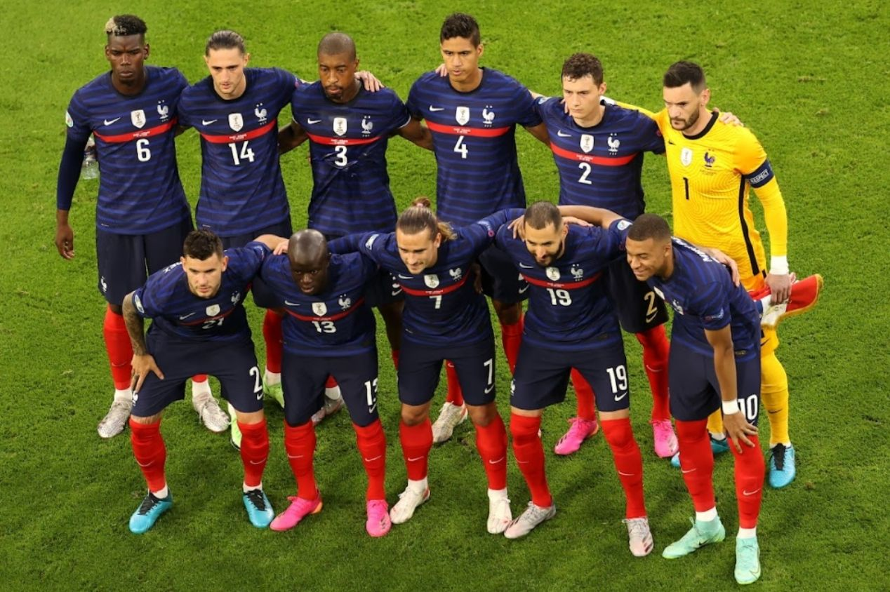

Seleções Favoritas a Vencer a Copa do Mundo 2022
BRASIL
MELHOR JOGADOR: Neymar Júnior
MELHOR POSIÇÃO: 1° Lugar (1958, 1962, 1970, 1994, 2002)
FRANÇA
MELHOR JOGADOR: Karim Benzema
MELHOR POSIÇÃO: 1° Lugar (1998, 2018)
ALEMANHA
MELHOR JOGADOR: Leroy Sané
MELHOR POSIÇÃO: 1° Lugar (1954, 1974, 1990, 2014)
ARGENTINA
MELHOR JOGADOR: Lionel Messi
MELHOR POSIÇÃO: 1° Lugar (1978, 1986)
URUGUAI
MELHOR JOGADOR: Luis Suarez
MELHOR POSIÇÃO: 1° Lugar (1930, 1950)

ESPANHA
MELHOR JOGADOR: Ansu Fati
MELHOR POSIÇÃO: 1° Lugar (2010)
INGLATERRA
MELHOR JOGADOR: Harry Kane
MELHOR POSIÇÃO: 1° Lugar (2010)
PORTUGAL
MELHOR JOGADOR: Cristiano Ronaldo
MELHOR POSIÇÃO: 3° Lugar (1966)